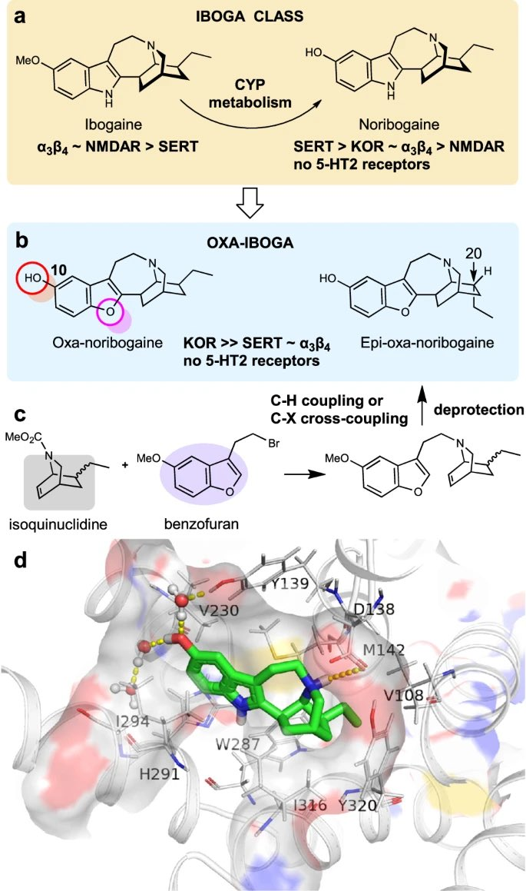

@jzm1919810 NMDAR，SERT，单胺再摄取抑制剂，还有对两种阿片受体表现出对G蛋白而非b-arrestin偏好性的多重机制
https://t.co/tkBGx5jKnu
改造氧代伊格博碱的多受体表征数据

https://t.co/tkBGx5jKnu
改造氧代伊格博碱的多受体表征数据

@RainduRhinns 伊博格碱的致幻机理是kappa agonist吗？harmaline在drug discrimination中可以完全替代ibogaine啊，感觉这里存在更复杂的机制，与其他kappa agonist不同